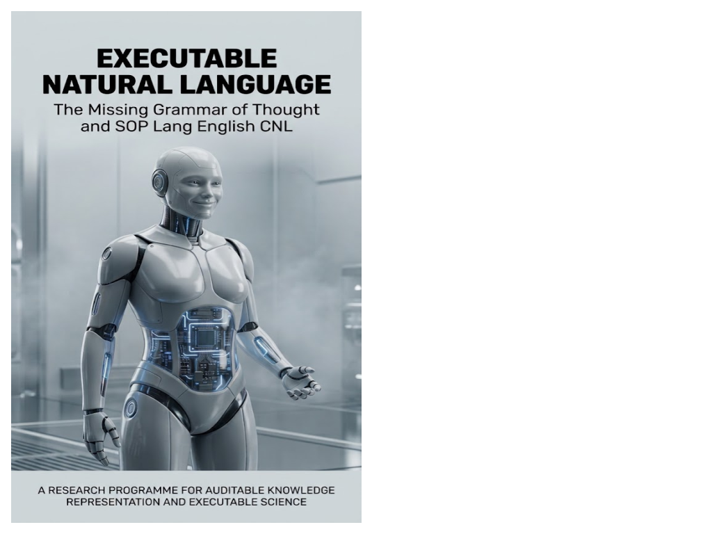

Executable Science · Axiologic Research Editions
Executable Natural Language
The Missing Grammar of Thought and SOP Lang English CNL
A research programme for an auditable semantic layer between ordinary language and computation.
Prose is not an execution surface
Language models make natural language a useful interface to computation, but scientific and technical prose remains an unstable execution surface. A system can reverse a quantifier, merge two identities, silently choose an ambiguous reading or convert reported evidence into accepted fact before any exact solver is called. The central problem is therefore not merely how to execute a formal object, but how to make the path from source to formal object visible enough to inspect and correct.
Executable Natural Language defines executability as a relation among artefacts: a named source revision, task contract, candidate interpretations, grounding evidence, chosen semantics, execution record and licensed explanation. A mechanically valid conclusion remains conditional on those declared boundaries. Exact computation cannot certify a translation it did not examine.
The missing grammar of thought
What does English leave implicit? English is flexible and efficient, but many distinctions relevant to reasoning are supplied by context: source of information, inclusive or exclusive participation, continuity of participants, temporal remoteness, perspective, possession, authority and spatial frame. The book draws on English grammar, linguistic typology, philosophy and systems research to treat such distinctions as candidate semantic variables rather than decorative nuance.
What is SLEnglish? SOP Lang English, or SLEnglish, is the proposed controlled pivot representation for these experiments. It is typed, regular and path-addressed: readable enough for human review, strict enough for deterministic parsing, validation, comparison and execution. Its shared outer grammar remains stable while reviewed operator libraries carry the semantic detail.
Where does the model stop? A model may propose interpretations, mappings and alternatives. It may not silently establish truth, provenance or authority. Parsers, type checkers, grounding records, interpreters and renderers each have different limits. The architecture makes those limits explicit so that a fluent sentence cannot borrow certainty from a solver, a schema or a source it has not faithfully represented.
What becomes executable is a declared projection whose omissions and assumptions remain inspectable.
Executable science as a semantic build system
The programme connects claims, evidence, data, code, models, workflows, reviews and corrections through explicit semantic dependencies. Such research objects can support bounded queries, contradiction checks, selective rebuilding, source-grounded explanations and comparison of alternative interpretations. The point is not to impose one mandatory backend or ontology, but to create a common executable envelope in which multiple profiles can be versioned, tested and revised.
For researchers, engineers and decision-system designers, the book develops a demanding but practical standard: a conclusion should be replayable relative to a named source, task, ontology, grounding policy and execution bound. That is narrower than claiming that a machine fully understands language, and more useful than trusting a polished answer because it sounds complete.